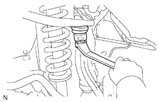

STEERING KNUCKLE > INSTALLATION |
| 1. INSTALL STEERING KNUCKLE LH |
|  |
Install the steering knuckle to the front suspension upper arm with the nut.
Install a new cotter pin.
| 2. INSTALL FRONT LOWER BALL JOINT ATTACHMENT LH |
Install the front lower ball joint attachment with the 2 bolts.
| 3. CONNECT TIE ROD END SUB-ASSEMBLY LH |
Connect the tie rod end to the steering knuckle with the nut.
Install a new cotter pin.
| 4. INSTALL FRONT AXLE HUB SUB-ASSEMBLY LH |
Install the front axle hub (Click here).
| 5. INSTALL FRONT SPEED SENSOR LH |
Install the speed sensor with the bolt.
| 6. INSTALL FRONT WHEEL |
| 7. INSPECT AND ADJUST FRONT WHEEL ALIGNMENT |
Adjust the front wheel alignment (Click here).
| 8. CHECK FRONT SPEED SENSOR |
Check the front speed sensor (Click here).